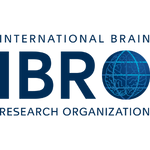
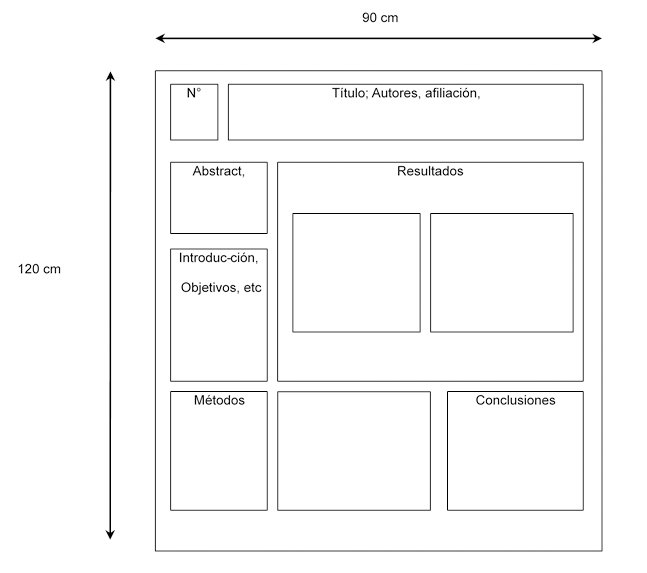
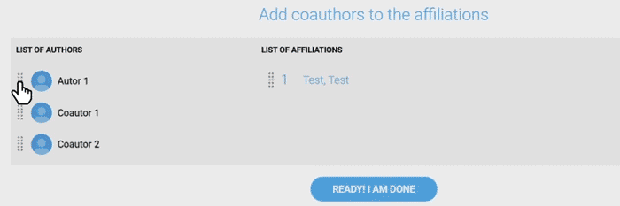

XXI Reunión Anual Sociedad Chilena de Neurociencia
Campus Isla Teja, Universidad Austral de Chile, Valdivia

Estimados(as) socios(as):
Nos alegra mucho informarles que la XXI Reunión Anual de nuestra Sociedad se realizará en el Campus de Isla Teja de la Universidad Austral, en Valdivia, entre los días 1 al 3 de octubre de 2025. Como siempre queremos contar con toda nuestra comunidad y poder disfrutar de un programa científico que resulte lo más atractivo posible. Para ello, contamos con su habitual, activa y entusiasta participación y les pedimos que participen del llamado adjunto, en el que se solicitan propuestas de simposios y conferencias plenarias. Agradeciendo su interés, les saluda cordialmente, Directorio
Las postulaciones son hasta el 14 de julio (incluido): Ingresa aquí
PREMIO A LA TRAYECTORIAEN NEUROCIENCIA
2013 Dr. Fernando Torrealba
2014 Dr. Luis Robles
2015 Dr. Francisco Bezanilla
2016 Dr. Nibaldo Inestrosa
2017 Dr. Humberto Maturana
2018 Dra. Katia Gysling
2019 Dr. Juan Bacigalupo
2022Dra. Maria Cecilia Hidalgo
2024 Dr. Pedro Maldonado
2025 Dra. Úrzula Wyneken
Instrucciones para Pósters
El póster debe confeccionarse en idioma inglés, incluyendo Título, Autores y su afiliación. El texto debe ser informativo y didáctico; no sobrecargue con demasiada información (ver modelo sugerido). Los presentadores de los posters deberán estar presentes, durante 2 horas en la sesión de poster 1 o 2, según corresponda, la cual le será informada oportunamente.

Los posters deben ser presentados en formato PDF y su peso máximo no puede superar los 30 megas.
Adicionalmente puedes incluir junto a tu poster PDF, un video explicativo de tu poster en formato MP4, es importante que este video no supere los 2 Gigas.
Instrucciones para envíode resúmenes
Para inscripción y/o envío de resúmenes, haz clic en crear nueva cuenta. Si ya posee una cuenta 4IDinicie sesión para acceder a la plataforma
Revisa aquí las instrucciones para enviar un resumen en 4ID Play o ve el siguiente VIDEO TUTORIAL
1) Completa tu perfil, si ya posees el tuyo puedes continuar con el siguiente paso
2) Realiza el pago de tu inscripción
3) Accede al módulo Trabajos
4) Ingresa en Crea tu Resumen
5) Completa todos los campos y haz clic en Guardar y Continuar, una vez que completes los
campos se activará el ingreso de Autores
6) Tu usuario será el primer autor, si no lo es puedes modificarlo al hacer clic en la lista
7) Tendrás dos opciones para ingresar autores, una es manualmente con el botón crear nuevo autor y la otra es buscando otro Profile ya inscrito en el evento, recuerda Guardar el autor para poder continuar, ya podrás ir al siguiente paso
8) Para agregar las afiliaciones tendrás disponible dos modalidades, una es Agregar manualmente y la otra es una carga masiva, si realizas clic en Agregar una nueva se sumará un registro que puedes editar con el acceso disponible a la derecha, solamente el primer campo es obligatorio, recuerda Guardar la afiliación para continuar
9) El siguiente paso te permitirá asignar las afiliaciones, esto se realiza arrastrando los Profiles desde izquierda a derecha sobre el listado de afiliaciones, para tomar los autores se dispone de un marca punteada a la izquierda del avatar
También podrás ordenar las afiliaciones con el mismo drag & drop

Para finalizar haz clic en ¡Listo Termine!
Si completaste todos los campos requeridos se activará el botón verde de Enviar resumen, puedes utilizar el acceso de previsualización para verificarlo tu resumen antes de enviarlo
Recuerda confirmar que tu resumen aparezca en la lista con el estado en verde «Enviado»
Puedes revisar el paso a paso en el siguiente video tutorial
SUBMISSION INSTRUCTIONS
To submit your abstract, please use the form available in the web page www.socneurociencia.cl
Abstract Submission will close on August 15th, 2019.
Preparing the Abstract
The official language of the meeting is English.
Therefore, abstracts, conferences, plenary lectures, oral communications and posters must be presented in English.
Title: Write your title in sentence case (first letter is capitalized; remaining letters are lower case). Do not bold or italicize your full title.
Author: List all authors who contributed to the work presented in the abstract. The presenting author must be listed as the first author (first slot of the list). Indicate the affiliation of all authors. For several institutions, use superscript numbers for identification.
Abstract: Enter the body of the abstract. The body of the abstract should be limited to 2.300 characters including punctuation but not spaces. Use standard abbreviations. When using abbreviations not commonly used (e.g. chemical compounds), spell out the full name the first time they are mentioned, followed by the abbreviation in parentheses. Do not abbreviate compounds in the abstract title.
Include a sentence indicating the source(s) of research support at the end of the abstract.
Tenemos el agrado de comunicar a usted que este año la Sociedad de Biología Chile celebra sus 90 años de existencia (1928-2018) y en el marco de la Reunión anual extendió una invitación a todas las Sociedades afiliadas para participar en ella. Por ahora, tenemos confirmada la reunión conjunta con la Sociedad Chilena de Neurociencia y estamos en conversaciones con otras sociedades afiliadas.
Las Directivas extienden a usted y su grupo de trabajo una cordial invitación a participar activamente en esta significativa reunión que tendrá lugar en el Hotel Enjoy (ex Hotel Patagónico) de Puerto Varas durante los días 20, 21 y 22 de noviembre de 2018.
Esperando encontrarnos en esta ocasión, le saludan cordialmente,
Dr. Christian González-BillaultDr. Patricio Rojas
Presidente Presidente
Sociedad de Biología de Chile Sociedad Chilena de Neurociencia